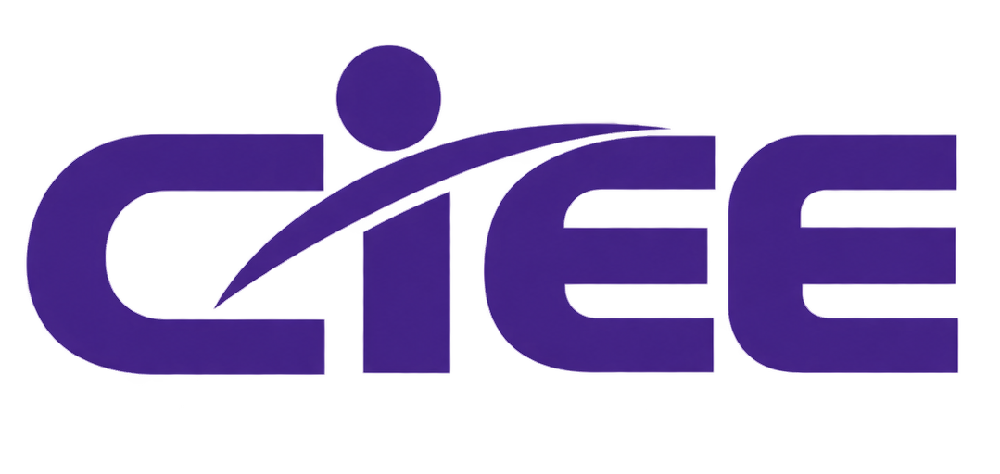

Uma visão ampla
Observe oito dimensões da sua vida sem reduzir quem você é a um único número.

AUTOCONHECIMENTO / 01
Uma pausa para entender onde você está, reconhecer o que já construiu e descobrir o que merece sua atenção.
Observe oito dimensões da sua vida sem reduzir quem você é a um único número.
Identifique padrões, forças e áreas que podem receber mais cuidado.
Transforme a reflexão em pequenas ações possíveis de acompanhar.
Seus dados ficam aqui. As respostas e o histórico são salvos no armazenamento local deste navegador.
REFLITA ANTES DE RESPONDER
Pense no seu comportamento habitual, não apenas no seu melhor ou pior dia.
Não existem respostas perfeitas. Escolha a alternativa que melhor representa sua realidade.
RELATÓRIO PESSOAL
ÍNDICE GERAL
Este índice resume suas respostas; não é um diagnóstico nem uma medida definitiva de quem você é.
VISÃO POR ÁREA
PONTOS FORTES
PONTOS DE ATENÇÃO
Use estas sugestões como ponto de partida. Escolha o que faz sentido para sua realidade e adapte sem culpa.
REGISTROS LOCAIS
Compare seus registros ao longo do tempo. Uma avaliação é apenas um recorte; a evolução aparece na continuidade.
O histórico fica neste navegador e pode ser apagado se os dados do site forem limpos. Não armazene informações sensíveis.